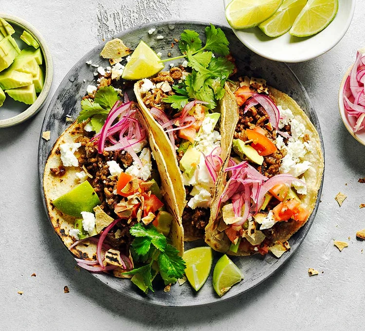

Home
Beef Tacos Recipe

Description
Make these vibrant beef tacos with a pack of mince. Go to the extra effort of making your own spice mix for even more flavour, and use soft tortillas
Ingredients
- 1 tbsp sunflower oil
- 500g beef mince
- 300ml beef stock
For the spice mix:
- 2 tbsp cumin seeds
- 1 tbsp coriander seeds
- 1 tsp black peppercorns
- 1 tsp chipotle chilli flakes
- 1 tbsp paprika
- 1 tbsp dried oregano
- 1 tsp garlic granules
- 1 tsp onion granules
- 2 tsp cornflour
For the pickled onions:
To serve:
- 6-8 small soft wheat or corn tortillas
- 1 avocado
- 1 tomato
- handful of feta
- 2 handfuls of tortilla chips
Steps
- To make the meat sauce, heat 2 tbsp olive oil in a frying pan and cook 750g lean beef mince in two batches for about 10 mins until browned all over.
- Finely chop 4 slices of prosciutto from a 90g pack, then stir through the meat mixture.
- Pour over 800g passata or half our basic tomato sauce recipe and 200ml hot beef stock. Add a little grated nutmeg, then season.
- Bring up to the boil, then simmer for 30 mins until the sauce looks rich.
- Heat the oven to 180C/160C fan/gas 4 and lightly oil an ovenproof dish (about 30 x 20cm).
- Spoon one third of the meat sauce into the dish, then cover with some fresh lasagne sheets from a 300g pack. Drizzle over roughly 130g ready-made or homemade white sauce.
- Repeat until you have three layers of pasta. Cover with the remaining 390g white sauce, making sure you can’t see any pasta poking through.
- Scatter 125g torn mozzarella over the top.
- Arrange the rest of the prosciutto on top. Bake for 45 mins until the top is bubbling and lightly browned.